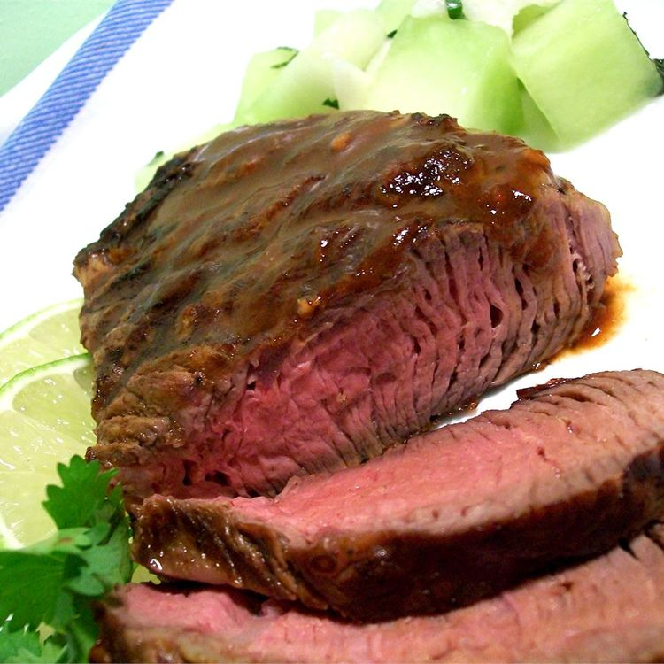

Home
Sirloin Adobo

Description
Try this grilled Adobo steak recipe for juicy top sirloin marinated in a spicy chipotle chile sauce.
This meat is great by itself but is also good in quesadillas and fajitas.
Submitted by Tracie Commins
Ingredients
-
1 medium lime, juiced
-
1 tablespoon minced garlic
-
1 teaspoon dried oregano
-
1 teaspoon ground cumin
-
2 tablespoons finely chopped canned chipotle peppers in adobo sauce
-
2 tablespoons adobo sauce, or to taste
-
4 (8 ounce) beef sirloin steaks
- salt and pepper to taste
Directions
-
Whisk lime juice, garlic, oregano, and cumin together in a small bowl. Stir in adobo peppers and adobo sauce.
- Pierce steaks on both sides with a sharp knife; sprinkle with salt and pepper. Place steaks into a glass baking dish. Pour adobo marinade over top; turn steaks until well coated. Cover the bowl with plastic wrap and marinate in the refrigerator for 1 to 2 hours.
- When ready to cook, preheat an outdoor grill for high heat and lightly oil the grate.
- Remove steaks from marinade and shake off excess. Discard remaining marinade.
- Grill steaks on the preheated grill for 6 minutes per side, or to desired doneness. An instant-read thermometer inserted into the center should read 140 degrees F (60 degrees C) for medium.